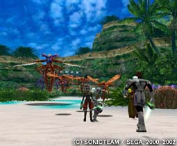
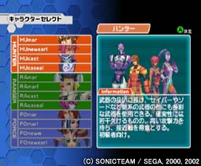

| 初公開の「海岸エリア」でプレイできる！ |
 |
昨年10月のTGSでの「密林エリア」に続き、先ごろ公開された「海岸エリア」。
「GameJam2」では、美しい砂浜とGCならではの水の表現が印象的なこのエリアでオンラインプレイが体験できるぞ！
そしてなんと、プレイアブルブースには、「キーボードコントローラー」を用意！GC版「ファンタシースターオンライン」
(仮)をプレイするには必携と言えるこのコントローラーをいち早く体験するチャンスだ！ |
|
| ボスはパワーアップした「ガル・グリフォン」！ |
 |
オンラインプレイのボスは「ガル・グリフォン」だ！「なんだぁ、前回と同じ？」なんてあなどってると、思わぬパワーアップで、手痛いしっぺ返しをくらうぞ！
地上で、空中で、より多彩になった攻撃でプレイヤーを翻弄するぞ！ |
|
| ボスを倒したチームには素敵なレア・アイテムが！ |
|  |
GC版プレイアブルブースでは、オンラインプレイ、4Pプレイともに、ボスを倒したチームには「PSO特製エアーマグ」をプレゼントするぞ！（どんなものかは会場でのお楽しみ!）
会場だけの超レアアイテムを、是非ゲットしよう！ |
|
| ステージではオドロキの新情報が満載！ |
|  |
さらに30日のソニックチームステージでは、ソニックチーム代表・中
裕司他PSOチームスタッフが、初公開映像をまじえながらGC版「ファンタシースターオンライン」
(仮)を解説。
今まで謎だったGC版の詳細が明らかになるか！？
ソニックチームステージは、
３月３０日（土）
１６：００〜１６：３０
の一回だけ!
これは見逃せないぞ!! |
|